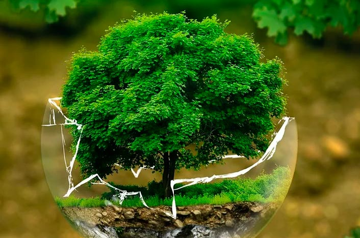

Semana 1
Presentación de la profesora y los demás compañeros, lectura y explicación de del programa y cronograma, formación de comunidades de trabajo, explicación de proyecto, explicación de la visita al vivero de la universidad y la gira a realizar.